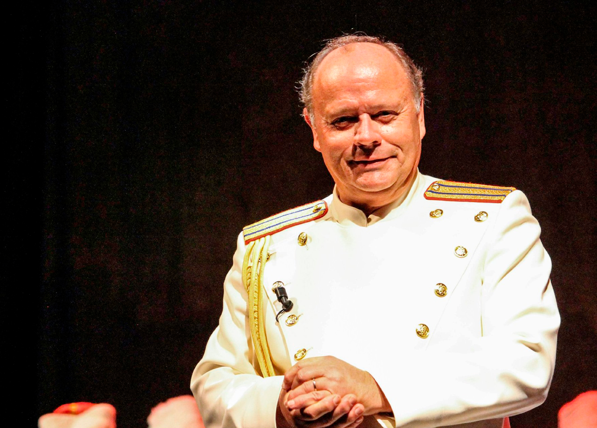

Don KosakenChor Russland



MARCEL N. VERHOEFF received his first piano lessons at the age of six. Marcel studied solo singing at the Royal Conservatory in The Hague from 1975 with pedagogue Herman Woltman. After that he studied with Aafje Heynis and then with Louis Devos at the Royal Conservatory in Brussels. He studied choral and orchestral conducting with Jan Eelkema, Fernand Terby, Kenneth Montgomery, Antoni Ross-Marba and Anton Kersjes. The last remained his coach for many years. Marcel Verhoeff conducted his first choir in 1975.
In 1987, after a number of successful concerts with mainly Russian music, he made his first study trip to the Soviet Union at the invitation of the Russian and Dutch governments. This visit was to determine a large part of his career. One of the consequences of his trip was the honourable invitation to conduct the Great Russian State Choir Alexander Yurlov Capella as part of the 1990 Tchaikovsky Memorial Year (Tchaikovsky had been born 150 years earlier). The collaboration between choir and conductor was later followed by a successful concert tour through the Netherlands. Guest performances with the St. Petersburg Symphony Orchestra – together with the legendary pianist Tatyana Nicolaeva in a performance of Tchaikovsky’s Second Piano Concerto was another consequence of his performances in Russia.
In 1993 he was appointed chief conductor of the Male Voices of Bulgaria in Sofia. He made several impressive CD recordings with this choir in Sofia’s Alexander Nevsky Cathedral. These CD’s also appeared on the Koch-Schwann label. In the same year he recorded Sergei Rachmaninov’s Vespers op. 39 with the State Academic Male- and Boys Choir of Moscow. Rachmaninov wrote these Vespers for boys and men’s voices, but it was the first time that a CD recording was made with a boys and men choir. In October 1993 Marcel was appointed Officer of the Cossack Regiment in Krasnodar, South Russia. He was then appointed chief conductor of the Don KosakenChor Russland. Since then Marcel Nicolajevich Verhoeff has made several tours and CD recordings with this choir and ensamble.
In September 2000 and October 2001 Marcel N. Verhoeff performed as a guest at the State Philharmonie in lași, where he conducted two opera and gala evenings with great success. He was asked as guest conductor of the Royal Military Chapel of the Royal Netherlands Army on the occasion of a major open air concert entitled “Midsummer Night’s Concert” in connection with the 750th anniversary of Breda. The concert featured: Breda’s Royal Male Choir, the choir of Wroclaw’s Philharmonic, many internationally renowned vocal soloists and the aforementioned Royal Military Chapel of the Dutch Army
In May 2012, Marcel conducted the world premiere of “The Flood” by the Dutch composer Douwe Eisenga during a special concert with the lași Philharmonic Orchestra, soloists and the State Philharmonic Choir “Moldova”. This concert was broadcast live by the Romanian state radio. Recently he also conducted the Philharmonic Orchestra of the City of Prague with which Marcel recorded compositions by the Indian composer L. Subramanim at the legendary Smecky Studio in Prague.In May 2012, Marcel conducted the world premiere of “The Flood” by the Dutch composer Douwe Eisenga during a special concert with the lași Philharmonic Orchestra, soloists and the State Philharmonic Choir “Moldova”. This concert was broadcast live by the Romanian state radio. Recently he also conducted the Philharmonic Orchestra of the City of Prague with which Marcel recorded compositions by the Indian composer L. Subramanim at the legendary Smecky Studio in Prague.
Marcel has now made 19 CD recordings with his Don KosakenChor Russland. These CD’s have been released worldwide by leading record labels such as: Koch-Classics, Universal-International, Christophorus, Deutsche Grammophon and others. In 2017 the AVROTROS recorded the anniversary concert of the Don KosakenChor Russland that was given in the Main Hall of the Concertgebouw in Amsterdam. A 55-minute recap of this performance was broadcast on New Year’s Eve 2017. This TV special was rerun in January 2018 and December 2019.
In June 2020 Marcel N. Verhoeff received a high award from His Royal Highness the King of the Netherlands: Officer in the Order of Orange-Nassau for his outstanding services in promoting the relationship between the Netherlands and East Europe, especially Russia. In 2021 the CD “The greatest Hits” was released on the Austrian label Tyrolis.